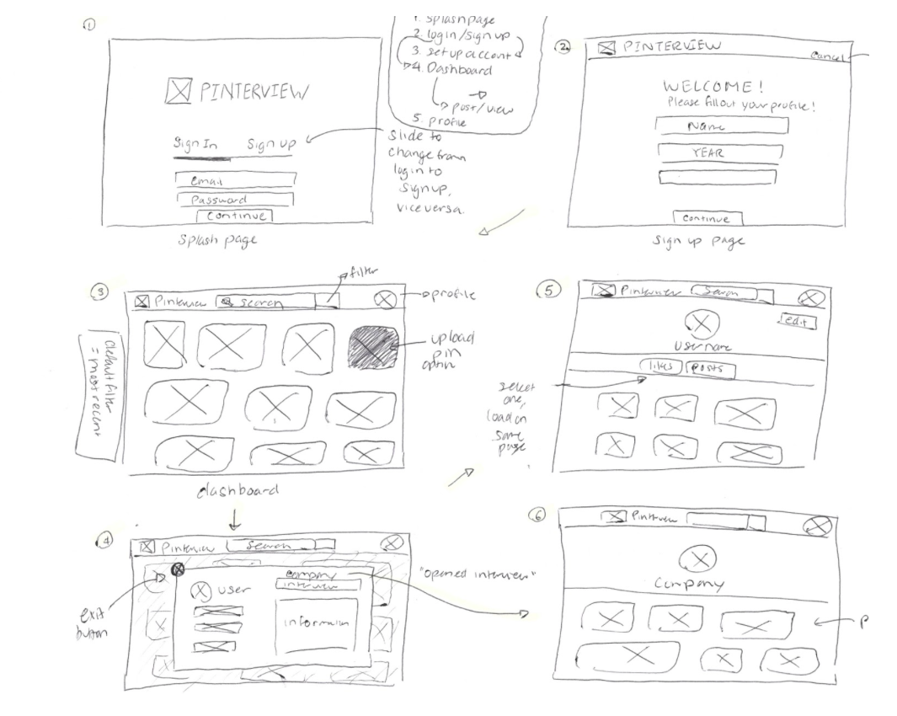

This semester, I am enrolled in
Computer Science 169: Software Engineering, a course dedicated to teaching students how to build large software systems. As of now, my team and I have been working for about 2 months developing a web platform for Berkeley students to share and find information regarding past interview experiences. Our identifying feature resides with the pinboard visualization, modeled after Pinterest's dashboard view. My contributions, up to this point, have involved design work and front end implementation.
Project
A number of student proposals were selected at the beginning of the semester, at which point students submitted their project preferences. I was placed under PINterview, as I figured it would be a good exercise for a designer. My team and I met extensively to determine our framework and backend architecture. Specifically, we have been using Ruby on Rails to develop our platform. The front end design and implementation has been determined heavily by Will and myself.
See Our Current Site
Wireframes
Because each project check-in extends only two weeks, we have to move fast. We work agilely and replicate much of the same development principles found within the tech industry. Accordingly, I was tasked with drawing out a quick wireframe and setting that directly into visual mockups.

The flow begins on the splash page, through which users can log in and sign up. Upon completing signup, users will be taken to the dashboard of interview pins. They can click on the various pins to see more information regarding the specific interview. They can also revert back to the dashboard. Finally, there is the user page, through which users are able to adjust their profile settings and see pins that they've posted and liked. As an additional feature, we are hoping to create a company page that shows a visualization of data pertinent to their interviews. Check back again soon to see more of our project!
See Other Projects